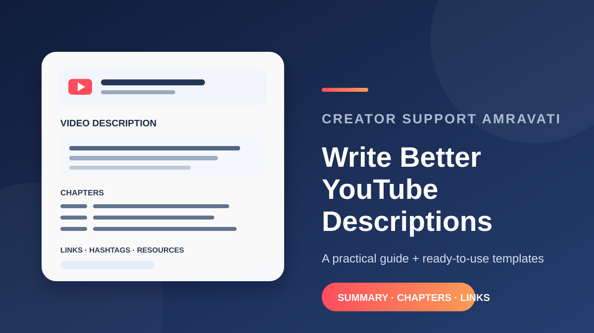

By: Creator Support Amravati · Published: 27 November 2026 · Category: YouTube Growth & Content Publishing
Many creators spend hours planning an episode, setting up lights, recording voice or video, and editing cuts, only to rush through the upload screen in the final minute. Leaving the description box nearly empty—or pasting an unformatted list of keywords—makes it harder for viewers to confirm whether a video matches what they need.
Your title and thumbnail help earn the initial click. A well-structured description gives viewers more context, helps them navigate useful sections, points them to relevant resources, and accurately explains what the video covers. It can support discoverability, but no description format can guarantee a search position or a specific number of views.
This guide explains a practical four-part structure, shows a completed example, shares templates for common video formats, and covers frequent mistakes to avoid.
Why the Opening Lines Matter Most
Only part of a description may be visible before a viewer expands it, and the amount shown can vary by device and layout. Treat the first one or two sentences as a concise preview: state the subject, the viewer's likely need, and the practical value of the video.
A long greeting, unrelated announcement, or pile of social links pushes the useful information out of view. Lead with an accurate summary instead. Use the main topic naturally; do not repeat the same keyword unnaturally just to make the description look optimized.
A Four-Part Structure for Clear YouTube Descriptions
1. Opening Summary (First 1–2 Sentences)
Explain what the video covers and who it is for. Be specific enough that someone scanning on a phone can decide whether the video answers their question.
- Vague: “Hey everyone, welcome back to the channel, today we are going to talk a bit about making video descriptions better.”
- Clearer: “Learn how to structure YouTube video descriptions so viewers can understand what a video covers and find its key sections.”
2. Detailed Overview
Use one or two short paragraphs to explain the main steps, examples, questions, or problems covered. There is no universal 150–250-word requirement. Write enough to set expectations and add useful context; remove filler that simply repeats the title.
Related terms such as chapters, audio cleanup, editing workflow, viewer navigation, and companion resources can appear when they genuinely describe the video. Accuracy and usefulness matter more than a target keyword count.
3. Chapters and Timestamps
For videos with distinct sections, chapters make it easier to jump to a relevant point. Write each timestamp on its own line and use a short, descriptive chapter name rather than a vague label such as “Part 2.”
- The first timestamp must start at
00:00. - Use at least three timestamps in ascending order.
- Each chapter must be at least 10 seconds long.
- Check every timestamp against the final exported video; editing changes can shift timings.
These are YouTube's current manual chapter requirements. Very short videos or videos without distinct sections may not benefit from a chapter list. See the official YouTube Video Chapters instructions.
4. Helpful Links and Relevant Hashtags
Place useful links near the bottom so the opening remains focused. Include only destinations that genuinely help the viewer:
- Related resources: a relevant playlist, companion article, source, or checklist.
- Product or service links: official pages for items actually discussed. Disclose affiliate relationships or paid promotions clearly where applicable.
- Channel and contact links: keep recurring profile links tidy and verify them periodically.
- Hashtags: choose a small number that directly match the video. Avoid unrelated trending terms.
Completed Example: A Practical Editing Tutorial
The example below shows how the summary, overview, chapters, and links can work together. The chapter timings are illustrative; replace them with the exact timestamps from your own final video.
Learn how to reduce distracting background hum and balance voice levels in a video edit so spoken words stay clear on phone speakers and headphones. In this walkthrough, we look at common causes of room noise, how to check audio levels before exporting, and simple adjustments you can apply in your editing timeline without over-processing the voice. This guide is useful for creators editing tutorials, interviews, and short-form clips who want consistent sound without complicated audio engineering. Chapters: 00:00 Why Clear Audio Matters 01:35 Checking Levels Before You Edit 04:10 Reducing Background Noise 07:45 Balancing Dialogue and Music 10:20 Pre-Export Audio Check Helpful Links: - Video Editing Basics Playlist: [Insert the actual playlist URL] - More Creator Guides: https://creatorsupportamravati.in/blog.html Connect: - Website: https://creatorsupportamravati.in - Contact: amravati.csa@gmail.com #VideoEditing #AudioTips #ContentCreation
Each block has a clear purpose: the opening tells viewers what they will learn, the overview adds detail, chapters support navigation, and links provide a useful next step. Do not publish sample timestamps or placeholder URLs unchanged.
Adaptable Templates for Common Video Formats
Use these as starting points. Replace every bracketed item, verify all links, and remove sections that do not apply to the actual upload.
Template 1: Tutorials, Lessons and How-To Guides
Learn [main topic or skill] step by step in this guide for [target audience]. In this video, we cover [first main point], [second main point], and practical ways to handle [common challenge]. You will see [specific demonstration or outcome] and learn how to apply it to [relevant task or goal]. Chapters: 00:00 Introduction 01:40 [First Topic or Step] 05:15 [Second Topic or Example] 09:50 [Common Pitfall or Troubleshooting] 13:20 Recap and Next Steps Helpful Links: - Related Guide or Playlist: [Verified URL] - Notes or Checklist: [Verified URL] Connect: - Website: [Your website] - Social Profile: [Your profile] #[MainTopic] #[SubjectArea] #HowTo
Template 2: Gear Reviews, Comparisons and Walkthroughs
Considering the [product or tool name] for [target user]? This review covers its practical use, strengths, limitations, and the points to consider before choosing it. We look at [product name] across setup, build and usability, day-to-day performance, and how it compares with [alternative]. The observations in this video are based on [state the actual test, hands-on use, or research method]. Chapters: 00:00 Overview 01:25 Design and Setup 03:30 Everyday Use and Testing 06:15 Strengths and Limitations 08:05 Final Takeaway Links and Mentions: - Official Product Page: [Verified URL] - Alternative or Related Guide: [Verified URL] More From Us: - Creator Resources: https://creatorsupportamravati.in/blog.html #[ProductName] #[CategoryName] #Review
Template 3: Interviews, Discussions and Podcasts
In this conversation, we speak with [guest name], [guest role or background], about [main topic] and lessons from [central theme]. We explore [discussion point one], [discussion point two], and practical experiences viewers can apply to their own projects, learning, or creative work. Chapters: 00:00 Opening and Episode Overview 01:20 Guest Background 07:45 Key Discussion Points 16:30 Practical Takeaways 25:10 Closing Thoughts Links and Resources: - Guest or Referenced Resource: [Verified URL] - More Episodes and Guides: [Verified URL] Follow Along: - Website: https://creatorsupportamravati.in - Social Channel: [Your profile] #Podcast #Interview #[TopicName]
Habits That Hurt Readability and Metadata Quality
- Pasting keyword lists: Comma-separated strings of unrelated terms are difficult to read and do not give viewers useful context.
- Reusing identical descriptions: Standard contact details can stay consistent, but the summary, overview, and chapters should reflect each individual video.
- Writing one long block: Use short paragraphs and clear line breaks so the description is easy to scan on a phone.
- Leaving broken links: Open every URL before publishing and check that it leads to the intended page.
- Adding inaccurate chapters: A timestamp that does not match the final edit frustrates viewers. Verify after the final export.
- Overpromising: Do not promise results, features, or product performance that the video does not demonstrate.
Frequently Asked Questions About YouTube Descriptions
How long should a YouTube video description be?
There is no universal word count that every video needs. Start with a clear one- or two-sentence summary, then add the details, chapters, and links that genuinely help viewers. Keep the description within YouTube's current platform limits.
Should I include timestamps on every video?
Use chapters when the video has distinct sections viewers may want to revisit, such as steps in a tutorial, topics in an interview, or stages in a review. Very short clips may not need them. If you add manual chapters, follow YouTube's timestamp requirements.
How many hashtags should I add?
A few relevant hashtags are usually enough to label the subject without cluttering the description. Choose terms that accurately represent the video rather than chasing unrelated trends.
Can I reuse the same description template?
Yes. Reuse a consistent structure and standard channel links to save time, but rewrite the opening, overview, and chapters for every upload. Check that the template still matches the actual video.
Do descriptions guarantee higher rankings?
No. A useful description provides context, but YouTube discovery depends on many factors, including the video itself and how viewers respond. Treat descriptions as one part of a complete publishing workflow, not a ranking shortcut.
Build a Consistent Publishing Workflow
Before publishing, confirm that the title, thumbnail, and description all describe the same video. Check chapters against the final edit, open each link, confirm disclosures, and read the opening lines on a phone-sized screen. A repeatable checklist reduces avoidable upload mistakes as your video library grows.
- Opening lines clearly explain the video and its audience.
- Overview adds useful details without keyword repetition.
- Chapter timestamps match the final video and meet YouTube's rules.
- Links work and lead to the intended destinations.
- Hashtags are relevant and limited.
- Any sponsorship or affiliate relationship is disclosed clearly.
- The description does not promise results the video cannot support.
For more practical publishing and production guidance, explore the Creator Support Amravati Blog or learn about our video production and creator support services.
Official Reference
For the latest requirements for manual video chapters, consult YouTube Help: Video Chapters.